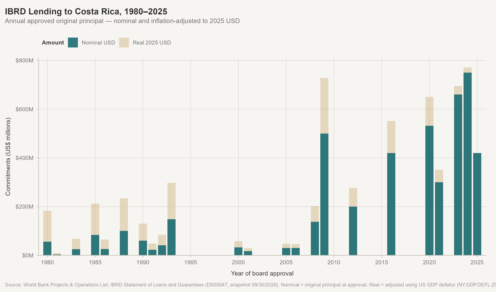
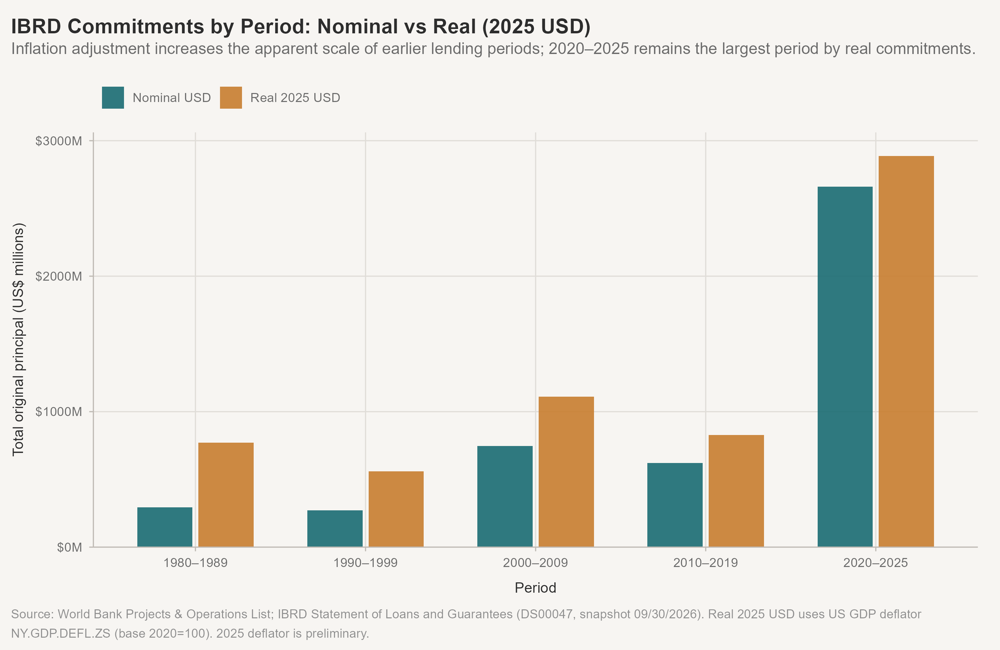
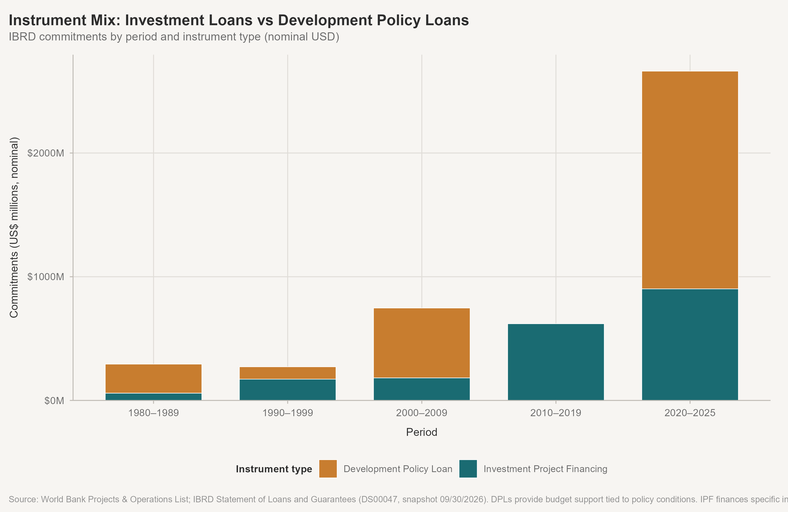
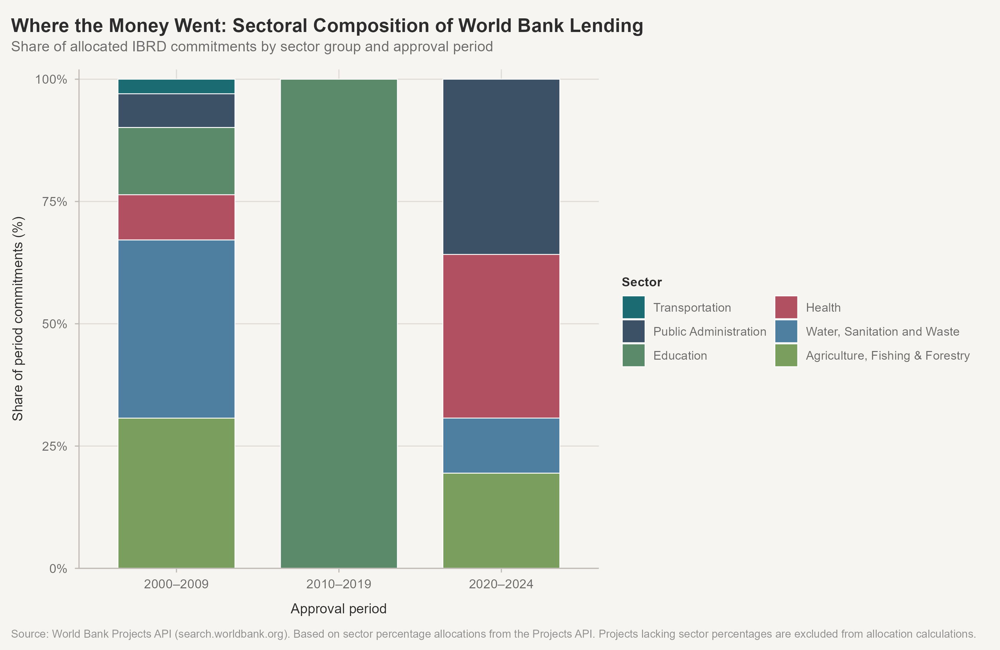
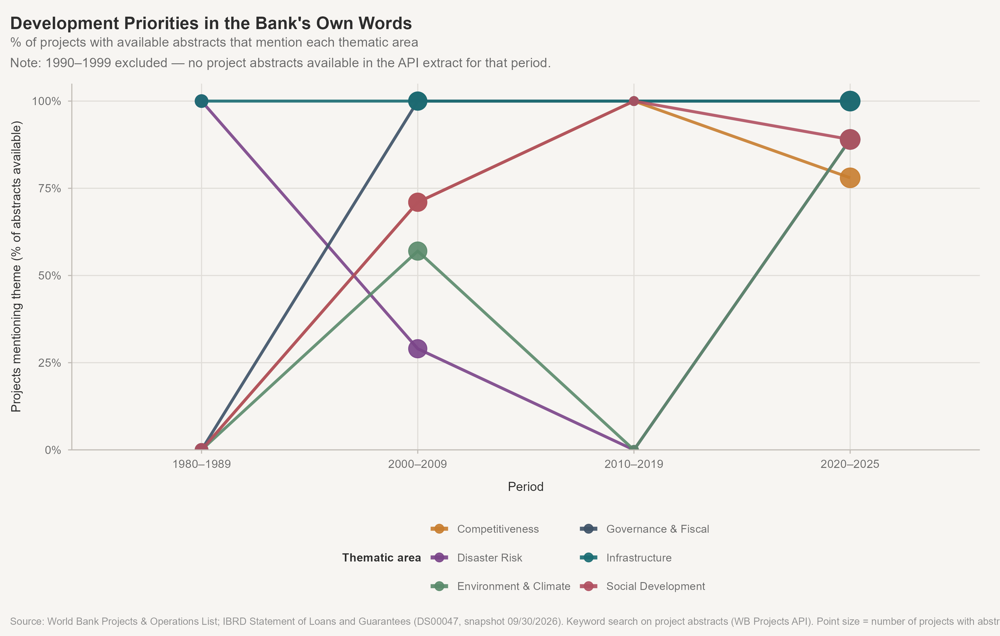
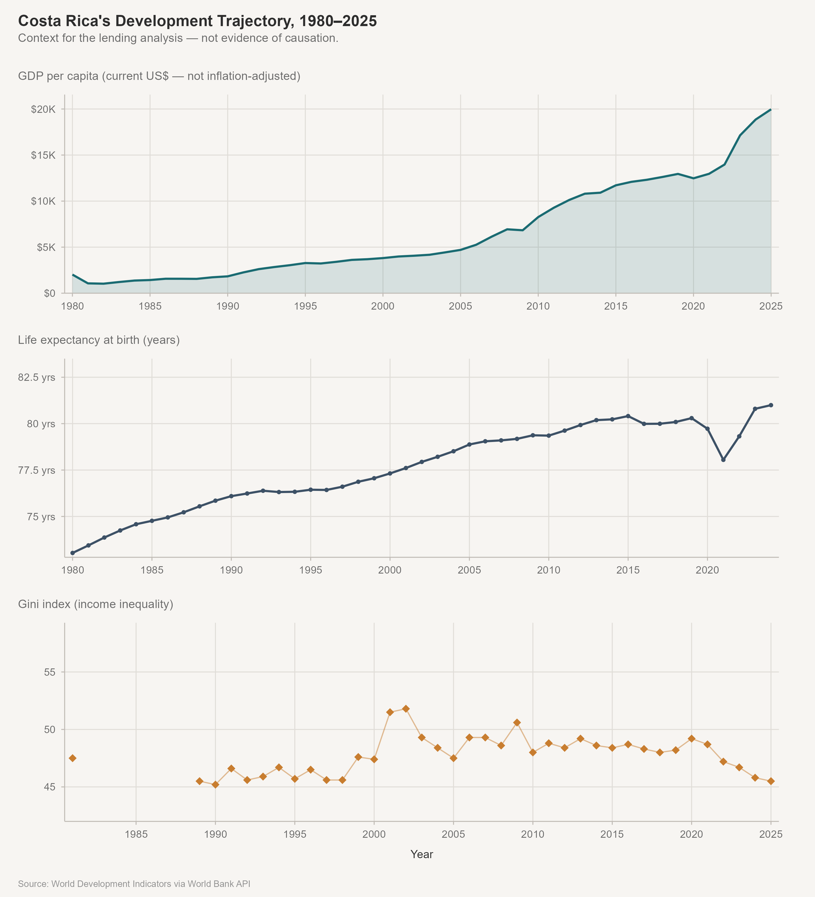
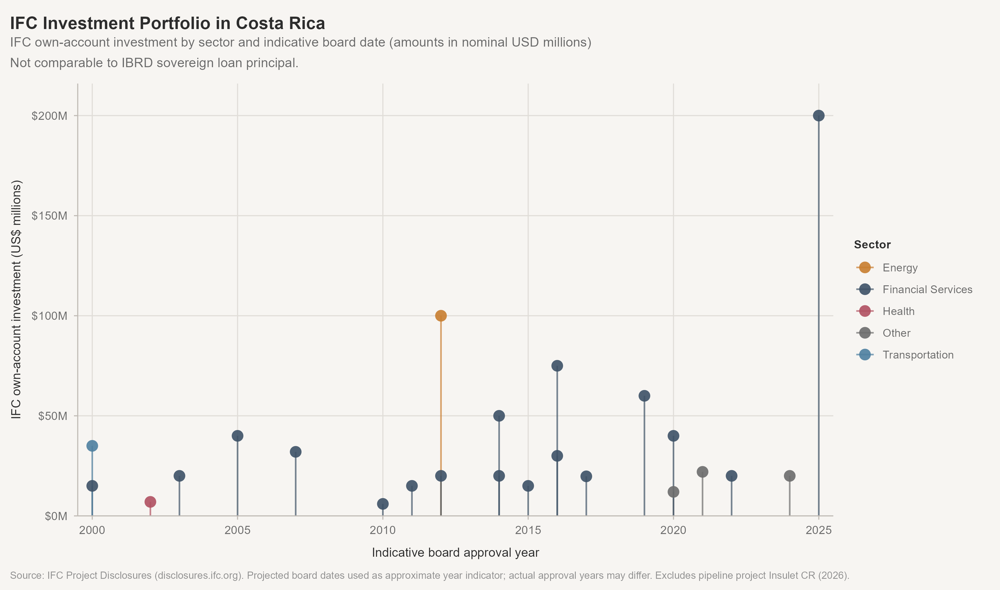

Analysis
Evidence behind the story — full tables and charts
A. Portfolio chronology and scale
Annual commitments (nominal and real)
Commitments by period
| Period | Projects | DPL | IPF/Other | Nominal (US$) | Net principal | Real 2025 USD | % nominal |
|---|---|---|---|---|---|---|---|
| 1980–1989 | 8 | 3 | 5 | $0.3B | $0.3B | $0.8B | 6.4% |
| 1990–1999 | 6 | 1 | 5 | $0.3B | $0.1B | $0.6B | 5.9% |
| 2000–2009 | 7 | 2 | 5 | $0.7B | $0.7B | $1.1B | 16.3% |
| 2010–2019 | 2 | 0 | 2 | $0.6B | $0.6B | $0.8B | 13.5% |
| 2020–2025 | 12 | 6 | 6 | $2.7B | $2.6B | $2.9B | 57.9% |
Top 10 projects
For additional detail, see the full list of IBRD projects in the Appendix.
| Project ID | Project name | Year | Nominal | Real 2025 | Net | Cancelled | Instrument | Status |
|---|---|---|---|---|---|---|---|---|
| P115173 | Public Finance and Competitiveness Development Policy Loan with Deferred Drawdown Option | 2009 | $500M | $728M | $500M | $0M | Development Policy Loan | Repaying |
| P177029 | Costa Rica Third Fiscal and Decarbonization Management DPL | 2023 | $500M | $527M | $500M | $0M | Development Policy Loan | Fully Disbursed |
| P148435 | Strengthening Universal Health Insurance in Costa Rica | 2016 | $420M | $551M | $420M | $0M | Investment Project Financing | Repaying |
| P178049 | Costa Rica Climate Resilient Recovery and Territorial Development Project | 2024 | $350M | $360M | $350M | $0M | Investment Project Financing | Effective |
| P171912 | First Fiscal and Decarbonization Management DPL | 2020 | $300M | $367M | $300M | $0M | Development Policy Loan | Repaying |
| P174786 | Costa Rica Second Fiscal and Decarbonization Management DPL | 2021 | $300M | $351M | $300M | $0M | Development Policy Loan | Repaying |
| P508347 | Costa Rica Fiscal Management and Green Growth | 2025 | $300M | $300M | $300M | $0M | Development Policy Loan | Signed |
| P123146 | Costa Rica Higher Education Improvement Project | 2012 | $200M | $277M | $194M | $6M | Investment Project Financing | Repaying |
| P181174 | Costa Rica Results in Education (CORE) | 2024 | $200M | $206M | $200M | $0M | Investment Project Financing | Signed |
| P181372 | Costa Rica Social Risk Management DPL DDO | 2024 | $200M | $206M | $200M | $0M | Development Policy Loan | Signed |
B. Nominal versus real: the inflation story

In real 2025 dollars, the eight 1980s operations (~$294M nominal total) represented approximately $772M — substantially larger than the nominal figure suggests. Of that total, three policy-based adjustment operations (SAL I, SAL II, and the Export Development loan) accounted for roughly $205M nominal, or about 70% of the decade’s lending. The 2009 $500M DPL was approximately $728M in 2025 dollars. The recent 2020–2025 operations lose some of their comparative magnitude once inflation-adjusted.
Real amounts use the US GDP deflator (NY.GDP.DEFL.ZS, base 2020=100). The 2025 deflator value is preliminary.
C. Instrument mix

| Period | Instrument | N | Nominal (US$M) | Real 2025 (US$M) | % of period |
|---|---|---|---|---|---|
| 1980–1989 | Development Policy Loan | 3 | $205M | $506M | 70 |
| 1980–1989 | Investment Project Financing | 5 | $88M | $266M | 30 |
| 1990–1999 | Development Policy Loan | 1 | $100M | $201M | 37 |
| 1990–1999 | Investment Project Financing | 5 | $172M | $360M | 63 |
| 2000–2009 | Development Policy Loan | 2 | $565M | $823M | 76 |
| 2000–2009 | Investment Project Financing | 5 | $182M | $287M | 24 |
| 2010–2019 | Investment Project Financing | 2 | $620M | $828M | 100 |
| 2020–2025 | Development Policy Loan | 6 | $1,760M | $1,919M | 66 |
| 2020–2025 | Investment Project Financing | 6 | $902M | $969M | 34 |
Instrument classification note: Structural Adjustment Loans (SAL I, SAL II, SAL III) are classified as Development Policy Lending. The Export Development loan (1983, P006922) is classified as adjustment-era policy lending via a manual override in data/manual/instrument_overrides.csv. The 1980 Highway Project (P006919) carries an NPL loan-type code but is classified as Investment Project Financing — its abstract confirms it financed road rehabilitation and equipment, not policy conditions (also a manual override). The Catastrophe DDO (2008), Public Finance and Competitiveness DPL-DDO (2009), and all Fiscal and Decarbonization DPLs (2020–2025) are Development Policy Loans. All others are Investment Project Financing or equivalent.
D. Sectoral composition

| Sector group | Allocations | Projects | Allocated (nominal) | Allocated (real 2025) |
|---|---|---|---|---|
| Public Administration | 14 | 12 | $907M | $1,083M |
| Education | 3 | 2 | $224M | $315M |
| ICT / Trade | 4 | 3 | $223M | $330M |
| Other | 3 | 3 | $184M | $446M |
| Water, Sanitation and Waste | 5 | 5 | $163M | $270M |
| Energy and Extractives | 4 | 3 | $162M | $198M |
| Agriculture, Fishing & Forestry | 3 | 3 | $123M | $175M |
| Transportation | 3 | 3 | $100M | $174M |
| Finance | 1 | 1 | $85M | $124M |
| Social Protection | 1 | 1 | $26M | $38M |
| Health | 2 | 2 | $16M | $28M |
Two distinct coverage figures: Sector metadata is available for 22 of 35 in-scope projects, whose combined original principal is approximately $2.7 billion (~59% of the $4.6B total). However, not all of those projects have complete sector percentages — only projects with reliable allocation percentages contribute to the dollar totals shown here. The actual amounts allocated across the sector categories sum to roughly $2.2 billion, the difference being projects with sector names but missing or zero percentages. The 2020–2025 DPL series largely lacks sector percentages in the API; it is excluded from allocation calculations. P178320 (COVID-19 Vaccines, Terminated, $0 original principal) is excluded from dollar totals. Sector allocations are a partial, non-representative view of the portfolio — treat with appropriate caution.
E. Development priorities in project language

For additional detail, see the top 30 words identified in the project abstracts.
| Period | Theme | Abstracts available | Total IBRD projects | With theme | % of abstracts |
|---|---|---|---|---|---|
| 1980–1989 | Disaster Risk | 2 | 8 | 2 | 100 |
| Infrastructure | 2 | 8 | 2 | 100 | |
| Competitiveness | 2 | 8 | 0 | 0 | |
| Environment & Climate | 2 | 8 | 0 | 0 | |
| Governance & Fiscal | 2 | 8 | 0 | 0 | |
| Social Development | 2 | 8 | 0 | 0 | |
| 1990–1999 | Competitiveness | 0 | 6 | 0 | NA |
| Disaster Risk | 0 | 6 | 0 | NA | |
| Environment & Climate | 0 | 6 | 0 | NA | |
| Governance & Fiscal | 0 | 6 | 0 | NA | |
| Infrastructure | 0 | 6 | 0 | NA | |
| Social Development | 0 | 6 | 0 | NA | |
| 2000–2009 | Governance & Fiscal | 7 | 7 | 7 | 100 |
| Infrastructure | 7 | 7 | 7 | 100 | |
| Competitiveness | 7 | 7 | 5 | 71 | |
| Social Development | 7 | 7 | 5 | 71 | |
| Environment & Climate | 7 | 7 | 4 | 57 | |
| Disaster Risk | 7 | 7 | 2 | 29 | |
| 2010–2019 | Competitiveness | 1 | 2 | 1 | 100 |
| Governance & Fiscal | 1 | 2 | 1 | 100 | |
| Infrastructure | 1 | 2 | 1 | 100 | |
| Social Development | 1 | 2 | 1 | 100 | |
| Disaster Risk | 1 | 2 | 0 | 0 | |
| Environment & Climate | 1 | 2 | 0 | 0 | |
| 2020–2025 | Governance & Fiscal | 9 | 12 | 9 | 100 |
| Infrastructure | 9 | 12 | 9 | 100 | |
| Disaster Risk | 9 | 12 | 8 | 89 | |
| Environment & Climate | 9 | 12 | 8 | 89 | |
| Social Development | 9 | 12 | 8 | 89 | |
| Competitiveness | 9 | 12 | 7 | 78 |
Abstract coverage and interpretation: The 1990–1999 period has zero project abstracts available in the WB Projects API extract. Other periods: 1980–1989: 2 abstracts of 8 projects; 2000–2009: 7 of 7; 2010–2019: 1 of 2; 2020–2025: 9 of 12. The 1980s and 2010s figures are extremely sparse — drawing conclusions from 2 or 1 abstract respectively is inadvisable. Percentages are shares of projects with available abstracts, not all in-scope IBRD projects.
What the table does and does not tell us: Infrastructure language appears at 100% in every period with available abstracts — but this reflects keyword matching (the words “road”, “transport”, “energy” appear widely), not that every project was an infrastructure investment. Environment/Climate keywords appear in the 2000s (57%) and 2020s (89%) but are absent in the 1980s (0%) and 2010s (0% from a single abstract). Governance/Fiscal language is absent in the 1980s, then consistently present from the 2000s onward. These patterns reflect stated language in project abstracts — not project expenditure, project effects, or Bank institutional priorities more broadly.
F. Economic and development context

| Year | GDP per capita | GDP growth | Gini | Life expectancy |
|---|---|---|---|---|
| 1980 | $2,000 | 0.8% | — | 73.0 |
| 1985 | $1,400 | 0.7% | — | 74.8 |
| 1990 | $1,800 | 3.6% | 45.2 | 76.1 |
| 1995 | $3,300 | 4.2% | 45.7 | 76.4 |
| 2000 | $3,800 | 3.8% | 47.4 | 77.3 |
| 2005 | $4,700 | 4% | 47.5 | 78.9 |
| 2010 | $8,300 | 5.4% | 48 | 79.4 |
| 2015 | $11,700 | 3.7% | 48.4 | 80.4 |
| 2020 | $12,500 | -4.1% | 49.2 | 79.7 |
| 2023 | $17,100 | 4.8% | 46.7 | 80.8 |
| 2024 | $18,900 | 4.1% | 45.8 | 81.0 |
G. IFC companion analysis

| Sector group | Projects | Total IFC investment |
|---|---|---|
| Financial Services | 17 | $678M |
| Energy | 1 | $100M |
| Other | 3 | $54M |
| Transportation | 1 | $35M |
| Health | 1 | $7M |
For additional detail, see the full list of IFC projects in the Appendix.
Appendix
All in-scope IBRD projects
| Project ID | Project name | Year | Nominal | Real 2025 | Net | Instrument | Abstract | Status |
|---|---|---|---|---|---|---|---|---|
| P006919 | RURAL ROADS(5TH HWY) | 1980 | $30M | $98M | $30M | Investment Project Financing | Read abstract
The Fifth Highway Project is part of the Government's five-year (1981-85) program for maintenance, rehabilitation and improvement of Costa Rica's highway network. The program components supported by the loan are: (a) the rehabilitation of some 420 km of primary and secondary roads; (b) technical assistance for improving the Ministry of Public Works and Transportation's organizational arrangements and procedures for highway rehabilitation and reconstruction; (c) purchase of maintenance equipment; and (d) technical assistance and training services to implement the Government's highway maintenance program. In addition, the project will strengthen road administration through a clearer division of responsibilities between the Ministry and local authorities. The project will first benefit vehicle operators and the transport industry, and later producers and consumers. Because of the ambitious size of the project, its major risk, special measures have been designed to afford adequate flexibility.
|
Fully Repaid |
| P006921 | WATER SUPPLY | 1980 | $26M | $85M | $26M | Investment Project Financing | Read abstract
The proposed project is part of AyA's five-year (1980-84) program for water supply and sewerage facilities. The program components supported by the proposed loan are: (i) the construction of a 27 km transmission pipe and tunnel to divert up to 1,8001/sec of water from the Rio Macho power plant reservoir to an expanded Tres Rios Water treatment plant ("Orosi Scheme"); (ii) the replacement of water mains in low-income areas of San Jose and installation of 30,000 water meters throughout Costa Rica; (iii) the preparation of a water and sewerage master plant for San Jose and three adjacent cities; and (iv) technical assistance to help develop AyA's capacity to plan and manage a national sector program responsive to rural and urban service needs. The project would alleviate water shortages in the capital city; set the basis for sectoral improvements in the remainder of Costa Rica; and help establish AyA's financial autonomy. The project faces no special risks.
|
Fully Repaid |
| P006920 | PETROLEUM EXPL/PROM | 1981 | $3M | $9M | $3M | Investment Project Financing | Unavailable | Fully Repaid |
| P006922 | EXPORT DEVELOPMENT | 1983 | $25M | $68M | $25M | Development Policy Loan | Unavailable | Fully Repaid |
| P006923 | SAL I (AP 5.0) | 1985 | $80M | $203M | $80M | Development Policy Loan | Unavailable | Fully Repaid |
| P006933 | T A I | 1985 | $4M | $9M | $3M | Investment Project Financing | Unavailable | Fully Repaid |
| P006924 | ATLANTIC AGRICULTURAL DEVELOPMENT | 1986 | $26M | $65M | $21M | Investment Project Financing | Unavailable | Fully Repaid |
| P006927 | SAL II | 1988 | $100M | $234M | $100M | Development Policy Loan | Unavailable | Fully Repaid |
| P006926 | TRANSPORT SECTOR INVESTMENT | 1990 | $60M | $130M | $47M | Investment Project Financing | Unavailable | Fully Repaid |
| P006938 | CR/BASIC EDUCATION | 1991 | $23M | $48M | $23M | Investment Project Financing | Unavailable | Fully Repaid |
| P006943 | AG SCTR INV | 1992 | $41M | $84M | $0M | Investment Project Financing | Unavailable | Fully Cancelled |
| P006941 | CR WATER SUPPLY | 1993 | $26M | $52M | $15M | Investment Project Financing | Unavailable | Fully Repaid |
| P006952 | SAL III | 1993 | $100M | $201M | $0M | Development Policy Loan | Unavailable | Fully Cancelled |
| P006954 | CR HEALTH SECTOR REFORM | 1993 | $22M | $44M | $22M | Investment Project Financing | Unavailable | Fully Repaid; Fully Transferred |
| P052009 | Ecomarkets Project | 2000 | $33M | $58M | $33M | Investment Project Financing | Read abstract
The Ecomarkets Project for Costa Rica aims to increase forest conservation by supporting the development of markets and private sector providers for environmental services supplied by privately owned forests including protection of biological diversity, greenhouse gas mitigation, and provision of hydrological services. The project has two components. The first supports committed expenditures for the government's Environmental Services Payments (ESP) program while long-term financing mechanisms for the program are developed and institutionalized. This financing permits the government to meet its long-term commitments to private landowners incorporated into the ESP program. The second component strengthens administration and field supervision of the ESP program. Resources will be used to improve the technical and administrative capacity of local nongovernmental organizations and private sector associations in providing field supervision, contract compliance, and preparation of technical and administrative manuals for forest conservation as well as assistance to individuals lacking land titles. Furthermore, this component will support organizational and technical strengthening of local women organizations to develop the capacity to promote natural resources management and to increase participation in the ESP program. Prospective activities include recompiling and systematizing the experiences of women farmers organizations as well as training rural women.
|
Fully Repaid |
| P073892 | Health Sector Strengthening and Modernization II Project | 2001 | $17M | $29M | $13M | Investment Project Financing | Read abstract
The Health Sector Strengthening and Modernization Project for Costa Rica aims to improve health system performance and financial sustainability by supporting the ongoing policy changes in the health sector in Costa Rica (See also report no. 11986). Most of these changes are part of second-phase reforms in the Costa Rican Social Security Institute (Caja Costarricanse de Seguro Social, or CCSS). There are two project components. The first provides financing to develop the strategies and instruments required to achieve the objectives set forth in the Policy Activity Schedule (PAS) (Annex 2A). The component will be executed through two mechanisms that 1) finance local and foreign consultant services, information systems, the development of supply chain solutions--including e-procurement, equipment for the Basic Health Care Teams (EBAIS), training in health policy, clinical practice and management, and study tours to incorporate international "best practice" into the Costa Rican health sector; and 2) allocations to decentralized sub-projects with the hospitals and health areas. The second component supports the development of a monitoring and evaluation system, and includes resources to establish and sustain information, education, and communication campaigns related to the modernization process. Support will also be given for the day-to-day operations of the Project Coordinating Unit assisting in project implementation.
|
Fully Repaid |
| P057857 | CR Equity and Efficiency of Education | 2005 | $30M | $47M | $24M | Investment Project Financing | Read abstract
The Equity and Efficiency of Education Project for Costa Rica will: (i) reduce existing rural education gaps in primary education quality, equity, and internal efficiency; (ii) develop cost-effective strategies to increase access to, and improve the quality of, secondary education rural modalities; (iii) improve the impact of equity programs for low-income students; and (iv) enhance the efficiency of the education sector's institutional and economic resources allocated to the rural sector. The project has the following three components: Component 1) will finance the implementation of Annual Operational Subprojects (POA Subprojects) aimed at improving rural education attainment and institutional development. Component 2) will increase the capacity of the Ministry of Public Education (MEP) to reduce equity gaps by supporting activities to identify, reach and monitor the delivery of pertinent supply and demand education services to regions with low education indicators and students from low income households. Component 3) will improve the institutional capacity of the MEP through inter-departmental integration strategies and working alliances across central, regional and school organizations.
|
Repaying |
| P093384 | Mainstreaming Market-Based Instruments for Environmental Management Project | 2006 | $30M | $46M | $30M | Investment Project Financing | Read abstract
The Mainstreaming Market-Based Instruments for Environmental Management Project enhances the provision of environmental services significant at the national and global levels, and secures their long-term sustainability through a scaled-up payment for environmental services system in Costa Rica. There are three project components. Component 1 develops new sustainable financing mechanisms for the Payment for Environmental Services (PSA) Program through a water tariff, a Conservation Trust Fund, carbon sequestration, and voluntary markets for biodiversity conservation. Component 2 supports the National Forestry Financing Fund in implementing an expanded PSA Program through institutional strengthening and payments to participating land users. Component 3 support the National Forestry Financing Fund's efforts to remove barriers for medium- and small-holder participation in the PSA Program; through technical assistance, capacity building, and secure land rights.
|
Fully Repaid |
| P085539 | Port-City of Limon Integrated Infrastructure Project | 2008 | $72M | $106M | $7M | Investment Project Financing | Read abstract
The objective of the Costa Rica City Port of Limon Project is to revitalize the city of Limon in line with the Government's Regional Development Strategy, and prepare for the modernization of the port of Limon. The project comprises four main components. The first component will invest in the urban upgrade, cultural heritage protection and revitalization and natural conservation of Limon, restoring its emblematic historical and cultural patrimony and providing basic services to one of its poorest neighborhoods. The second component will support the generation of new sources of employment and income, particularly among the young, through the development of micro and small businesses, training and technical assistance, seizing the opportunities presented by growing cruise tourism and the historical/cultural richness of Limon. The third component will provide technical assistance for the Municipality of Limon to improve its capacity to deliver and manage quality services and goods while empowering it to take an active role in the city's development. And finally, the fourth component will support: (i) improvement of transport access to the Limon and Moin port terminals, which includes the repair of the bridge over the river Chirripo, the rehabilitation of a warehouse in Leesville, and the construction of a short section of track for direct access to the dock of Moin; and (ii) technical assistance to the Transport Ministry to support the concessions process of the terminals and transport system for Moin and Limon, including complementary analysis such as fine-tuning the Port Master Plan, developing a business plan for the port, and carrying out more detailed institutional analyses.
|
Fully Repaid |
| P111926 | Costa Rica Catastrophe Deferred Draw Down Option (CAT DDO) | 2008 | $65M | $95M | $65M | Development Policy Loan | Read abstract
This program document concerns the Catastrophe Deferred Draw Down Option (CAT DDO) Project as budget financing for the Government of Costa Rica (GoCR) for three years.' The CAT DDO was developed by the Bank to respond to middle income countries' request for loans that better address their immediate funding needs in the aftermath of natural disasters. The overall development objective of the project is to enhance the government's capacity to implement its disaster risk management program for natural disasters. The CAT DDO will provide a source of immediate liquidity in case of a natural disaster. The CAT DDO will complement other instruments in the country and provide a source of bridge financing while other sources are being mobilized following a natural disaster. This operation will support two key policy areas of the Costa Rica Disaster Risk Management Program: (a) strengthening of the institutional and legal framework, and (b) mainstreaming disaster risk in the national development and investment programs. Several risks were identified during project preparation, and those that deserve attention are as follows: (a) Deterioration of Costa Rica's macroeconomic situation due to internal and external factors (rated moderate). Costa Rica currently benefits from a robust macroeconomic framework. (b) Coordination is a systemic risk in any emergency management project (rated low). In Costa Rica, the National Emergency Commission (CNE) has strong capacity for leading an emergency response and institutional efforts. (c) Political risk (rated low). The country is politically stable and has low turnover of senior officials. (d) The procedures implemented prove unable to disburse funds rapidly (rated as low). Given the inherent purpose and structure of the instrument, the Bank team will work closely with the GoCR and relevant Bank departments to ensure prompt disbursement.
|
Repaying |
| P115173 | Public Finance and Competitiveness Development Policy Loan with Deferred Drawdown Option | 2009 | $500M | $728M | $500M | Development Policy Loan | Read abstract
The objectives of the Public Finance and Competitiveness Development Policy Loan with Deferred Draw-Dawn Option (DPL-DDO) Program for Costa Rica are to: (i) strengthen public finances and their transparency by enhancing the efficiency of revenue generation and results-based management of expenditures; and (ii) improve competitiveness by enhancing secondary education attainment, facilitating market entry in the telecommunications and insurance sectors, and strengthening the legal framework pertaining to intellectual property rights. This Public Finance and Competitiveness DPL-DDO, together with a parallel loan from the Inter-American Development Bank (IDB) approved on December 17, 2008, and a precautionary stand-by arrangement, are integral to Costa Rica's strategy to manage financing risks associated with the crisis on different fronts. Similarly, the precautionary stand-by arrangement provides a contingent line of liquidity to support the Central Bank's international reserves if needed. Finally, the DPL-DDO will provide a contingent line of credit to the Ministry of Finance in case a worsening in the economic environment makes the financing of the deficit more difficult than anticipated.
|
Repaying |
| P123146 | Costa Rica Higher Education Improvement Project | 2012 | $200M | $277M | $194M | Investment Project Financing | Read abstract
The objectives of the Higher Education Improvement Project for Costa Rica are to improve access and quality, to increase investments in innovation and scientific and technological development, as well as to upgrade institutional management, all in Costa Rica's public higher education system. There are two components to the project, the first component being institutional improvement agreements. The objectives of this component will be: (i) to help public universities increase access by investing in infrastructure for teaching, learning and research; (ii) to increase the quality of higher education by, among others, upgrading faculty qualifications and fostering evaluation and accreditation; (iii) to increase relevance in higher education by focusing resources on priority subjects that are key to the country's development; and (iv) to strengthen public universities' management capacity and accountability. Finally, the second component is strengthening institutional capacity for quality enhancement. This component includes three sub-components: (a) strengthening the national system for the accreditation of higher education; (b) developing the labor market observatory and the public higher education information system; and (c) supporting the project's coordination, supervision, and evaluation.
|
Repaying |
| P148435 | Strengthening Universal Health Insurance in Costa Rica | 2016 | $420M | $551M | $420M | Investment Project Financing | Unavailable | Repaying |
| P168475 | Costa Rica Sustainable Fisheries Development Project | 2020 | $75M | $92M | $0M | Investment Project Financing | Read abstract
The development objective of Sustainable Fisheries Development Project is to improve management of priority fisheries and enhance economic opportunities from those fisheries for Costa Rica. This project has four components. 1) The first component, Strengthening the governance and management of fisheries resources, aims to primarily support the strengthening of institutional capacities and regulatory frameworks, and other actions by the public sector necessary to improve the climate-informed governance and management of priority offshore and coastal fisheries. 2) The second component, Investing in sustainable fisheries value chains, aims to focus on creating an enabling environment for sustainable growth and greater climate resilience in the fisheries and aquaculture sector by supporting public investments in critical infrastructure and related services to improve the business climate for viable private sector investments. 3) The third component, strengthening mechanisms for social and environmental sustainability, aims to focus on supporting efforts to ensure that the transition towards a sustainable fisheries management regime addresses short-term socio-economic costs while increasing the environmental (including climate) benefits associated with that transition. 4) The fourth component, Project management, monitoring and communications, aims to strengthen Costa Rican Institute for Fisheries and Aquaculture (INCOPESCA’s) capacity to manage, implement, monitor, and report on project activities.
|
Disbursing |
| P171912 | First Fiscal and Decarbonization Management DPL | 2020 | $300M | $367M | $300M | Development Policy Loan | Read abstract
The operation supports Costa Rica in mitigating the social and economic impacts of the coronavirus (COVID-19) pandemic and lays the foundations for sustainable fiscal recovery that also promotes green growth and low carbon development. The proposed US300 million dollars operation is the first in a programmatic Development Policy Financing (DPF) series of two in support of the Government’s program to: (i) protect people’s income and jobs from the impacts of COVID-19 and foster small and medium enterprise (SME) recovery; (ii) reinforce fiscal sustainability in the aftermath of COVID-19; and (iii) lay out the foundations for strong post-COVID-19 recovery by promoting green growth and low-carbon development. Supporting the Government of Costa Rica in effectively responding to the pandemic is critical to assist the population in greatest need, prevent job loss, and foster job creation, while at the same time tapping non-distortionary revenue sources to partially fund these efforts. Once the crisis moderates, the authorities plan to reinforce their fiscal and decarbonization programs, which the Government had vigorously launched prior to the pandemic. Swift and continuous implementation of fiscal and decarbonization reforms is essential to boost the country’s stabilization efforts and generate new sources of sustainable growth. The last DPL for Costa Rica was approved in April 2009. The proposed operation is being prepared as part of an international financing package to support Costa Rica during the COVID-19 emergency. The series is part of a coordinated effort by the international community to support Costa Rica’s macroeconomic stabilization and sustainable growth program. In the context of COVID-19, this effort has been adjusted to help the crisis response. The international package includes an International Monetary Fund (IMF) Rapid Financing Instrument (RFI) for US504 million dollars, which was approved on April 29, 2020 as a bridge until a full arrangement is in place. Attached to the IMF’s RFI, the Inter-American Development Bank (IDB) is preparing a financing package of around US250 million dollars to support the crisis response and has already approved a budget support operation together with the French Development Agency (AFD) for US380 million dollars. The Development Bank of Latin America (CAF) has already disbursed a package of around US500 million dollars to support the crisis response and the Central American Bank for Integration (CABEI) is providing US300 million dollars in parallel co-financing to the proposed IBRD operation.
|
Repaying |
| P172352 | Costa Rica Fiscal Management Improvement Project | 2020 | $157M | $192M | $127M | Investment Project Financing | Read abstract
The development objective of Fiscal Management Improvement Project for Costa Rica is to improve efficiency, effectiveness and client orientation of tax and customs administration, and public expenditure management. This project has five components. 1) The first component, Strengthening public expenditure management, has the following subcomponents: (i) Strengthening expenditure policy and planning; (ii) Streamlining and control of public expenditure cycle; and (iii) Modernizing PFM Information System. 2) The second component, Enhancing efficiency and client orientation of tax administration, has the following subcomponents: (i) Streamlining and automating core tax processes; (ii) Improving citizen and business taxpayer services; and (iii) Design and implementation of a comprehensive compliance strategy.3) The third component, Enhancing customs controls and services, has the following subcomponents: (i) Strengthening customs controls and clearance procedures; (ii) Improving trade facilitation services; and (iii) Implementing a risk-based framework and post-clearance audit. 4) The fourth component, Strengthening the technological, institutional and operational environment, has the following subcomponents: (i) Strengthening human resource management; (ii) Modernization and integration of Ministry of Finance (MOF’s) information technology infrastructure; (iii) Operational Support and Change Management; and (iv) Flexible Technical Assistance. 5) The fifth component, Project Management and Capacity Building, aims to finance support for project coordination and management to ensure successful and timely delivery of project activities and results, including the provision of support to the Project Coordination Unit (PCU).
|
Disbursing&Repaying |
| P174786 | Costa Rica Second Fiscal and Decarbonization Management DPL | 2021 | $300M | $351M | $300M | Development Policy Loan | Read abstract
The development objectives of the Second Fiscal and Decarbonization Management Development Policy Loan in Costa Rica are to support Costa Rica's program to: (i) protect people’s income and jobs from the impact of COVID-19 and foster small and medium enterprise recovery; (ii) reinforce fiscal sustainability in the aftermath of COVID-19; and (iii) lay out the foundations for a strong post-COVID-19 recovery by promoting green growth and low-carbon development. This operation supports Costa Rica’s efforts to navigate a prolonged crisis and to lay the foundations for an efficient and sustainable recovery. Pillar A supports measures to improve the targeting and coverage of social assistance programs and to protect jobs and SMEs affected by COVID-19. It also supports reforms to strengthen the business environment and to advance an efficient recovery by improving insolvency procedures. Pillar B supports Costa Rica’s continued fiscal consolidation based on: (i) improving budgetary planning and spending controls; (ii) containing the public wage bill; and (iii) improving debt management. Finally, Pillar C contributes to building a solid foundation for green, low carbon, and climate-smart growth by: (i) strengthening data systems for informing and monitoring low carbon initiatives, and establishing carbon market mechanisms; (ii) introducing price-signals and reforms that increase investments in greener/low-carbon technologies and production systems; and (iii) improving institutional coordination and transparency in resource use. Overall, the supported reforms are expected to be positive or neutral from both a distributional and environmental perspective.
|
Repaying |
| P178320 | Costa Rica COVID-19 Vaccines Project | 2022 | $0M | $0M | $0M | Investment Project Financing | Read abstract
The development objective of COVID Vaccines Project for Costa Rica is to prevent, detect and respond to the threat posed by COVID-19 and strengthen national systems for public health preparedness. This project has two components. 1) The first component, COVID-19 Vaccines and ancillary products, will support the purchase of COVID-19 vaccines and vaccination ancillary products, such as needles, syringes, alcohol, up to 75 percent of which will retroactively finance the payments made between December 2021 and the signature of the loan agreement, but in no case more than one year prior to the signature date. 2) The second component, Project Management and Monitoring, aims to finance the required project management activities, and administrative resources including operating costs, training, and external audits to manage the project.
|
Terminated |
| P177029 | Costa Rica Third Fiscal and Decarbonization Management DPL | 2023 | $500M | $527M | $500M | Development Policy Loan | Read abstract
The development objective of the Third Fiscal and Decarbonization Management Development Policy Loan (DPL) for Costa Rica is to support Costa Rica’s program to: (i) protect people’s income and jobs from the impact of COVID-19 and foster small and medium enterprise recovery; (ii) reinforce fiscal sustainability in the aftermath of COVID-19; and (iii) lay out the foundations for a strong post-COVID-19 recovery by promoting green growth and low-carbon development. The operation is part of a DPL series that supports Costa Rica’s efforts to mitigate the social and economic impacts of recent exogenous shocks in the short term and to achieve a sustainable fiscal and green growth path in the medium term. This operation closes the DPL series by deepening the structural reform agenda by the earlier operation, while also helping Costa Rica to navigate adverse external conditions related to Russia’s invasion of Ukraine and tightening of United States monetary policy.
|
Fully Disbursed |
| P179861 | Second Costa Rica Disaster Risk Management Development Policy Loan with a CAT DDO | 2023 | $160M | $169M | $160M | Development Policy Loan | Read abstract
The development objective of the Second Costa Rica Disaster Risk Management Development Policy Loan with a Catastrophe Deferred Drawdown Option (Cat DDO) for Costa Rica is to enhance the Government of Costa Rica’s capacity to manage disaster risk resulting from the occurrence of natural and health related hazards and the impacts of climate change. The operation builds on the successful implementation and achievements of the first Cat DDO and reflects the ongoing policy dialogue and collaboration between the World Bank and the Government of Costa Rica on disaster risk management (DRM) and climate change adaptation. The operation is fully aligned with the government’s DRM program and its efforts to address identified institutional, financial, and policy gaps. It is closely aligned with the priorities under the 2023-2026 national development and public investment plan; the 2020-2025 national risk management plan; and the 2018-2030 national climate change adaptation policy (PNACC). The operation is structured around two policy areas and four prior actions that support strategic actions aimed at increasing financial resilience against shocks; integrating climate, natural hazard, and gender-responsive climate risk reduction considerations into the government’s investment planning processes; and promoting sustainable and risk-informed planning at the territorial level.
|
Effective |
| P178049 | Costa Rica Climate Resilient Recovery and Territorial Development Project | 2024 | $350M | $360M | $350M | Investment Project Financing | Unavailable | Effective |
| P181174 | Costa Rica Results in Education (CORE) | 2024 | $200M | $206M | $200M | Investment Project Financing | Read abstract
The objective of the Results in Education (CORE) Project for Costa Rica is to enhance MEP efficiency and improve foundational learning, digital competencies, and employability skills of students in MEP-administered schools. The project has four components: the first component being support for the management transformation of MEP and the modernization of its information systems. This component has two subcomponents: management transformation of MEP, and information systems modernization. The second component is the support for Pedagogical Transformation. This component includes three subcomponents: support for foundational learning, support of digital competencies and hybrid learning, and supporting the automation of learning assessments. The third component is the support for employability and inclusion in education programs. This component includes two subcomponents: support for employability, and development of targeted programs for indigenous, migrant and refugee students. Finally, the fourth component is the project management and operational analytical support. This component includes two subcomponents: project management, and operational analytical support.
|
Signed |
| P181372 | Costa Rica Social Risk Management DPL DDO | 2024 | $200M | $206M | $200M | Development Policy Loan | Read abstract
The objective of the Social Risk Management Development Policy Loan with a Deferred Drawdown Option Program is to strengthen the targeting and efficiency of Costa Rica’s social protection system. It is comprised of two pillars that reflect priorities identified in the 2023 Costa Rica SCD update: improvements of social assistance’s targeting and reforms to lessen fragmentation and enhance coordination. The first pillar focuses on improving the poverty targeting of social spending in Costa Rica by strengthening the uptake, robustness, and inclusiveness of its integrated social registry. The second pillar addresses the need to enhance the efficiency of social spending in Costa Rica by reducing fragmentation, improving and coordinating the delivery of social assistance programs, and reducing costs of the delivery of social protection interventions. The stand-alone DPL/DDO modality offers the option of quickly mobilizing liquidity to finance priority spending, including if Costa Rica is hit by climate, social, or economic shocks and needs to cover a targeted and temporary social assistance response. The DPL-DDO supports the government in developing and implementing policies aimed at improving social spending, strengthening adaptation to climate change, and improving opportunities, with a focus on poor and vulnerable groups. The operation also supports outcome area one of the new corporate-score card: protection for the poorest. By improving the targeting and coverage of social assistant programs among the lower income segments of the population the operation directly contributes to advancing these outcome areas. Additionally, by helping improve the adaptiveness of the social protection system, the operation contributes to the prevention and mitigation of the impact of climate shocks among these segments.
|
Signed |
| P504033 | Program for Sustainable and Competitive Agriculture in Costa Rica | 2025 | $120M | $120M | $120M | Investment Project Financing | Unavailable | Disbursing |
| P508347 | Costa Rica Fiscal Management and Green Growth | 2025 | $300M | $300M | $300M | Development Policy Loan | Unavailable | Signed |
Top 30 most frequent words in IBRD project abstracts
| Word | Frequency |
|---|---|
| development | 34 |
| management | 34 |
| education | 19 |
| social | 19 |
| strengthening | 18 |
| covid | 17 |
| public | 17 |
| operation | 16 |
| policy | 16 |
| low | 15 |
| services | 15 |
| capacity | 14 |
| institutional | 14 |
| risk | 14 |
| climate | 13 |
| components | 13 |
| improving | 13 |
| assistance | 12 |
| ddo | 11 |
| fiscal | 11 |
| national | 11 |
| supports | 11 |
| sustainable | 11 |
| technical | 11 |
| finance | 10 |
| sector | 10 |
| system | 10 |
| carbon | 9 |
| dpl | 9 |
| efficiency | 9 |
All in-scope IFC investment projects
| Project # | Project name | Ind. year | Date type | IFC own-acct | Sector | Description | Status |
|---|---|---|---|---|---|---|---|
| 10339 | Banco Interfin II | 2000 | Projected board date (indicative) | $15M | Financial Services | Read description
The project consists of a long-term credit line of US$10 million to Banco Interfin ("Interfin" or "the Bank") for on-lending to small and medium-size enterprises (SME) for the financing of expansion and modernization of projects. A portion of the loan can be used by Interfin''s leasing affiliate, Arrendadora Interfin to finance equipment purchase for lease contracts. The proposed project would be a repeat investment, following a US$5 million credit line extended by IFC to Interfin in 1993. The earlier credit line was used to finance 18 SMEs and the project achieved its main objectives of providing Costa Rican SMEs with much needed long-term funds to finance modernization and expansion. This project will further these goals and also help Interfin enhance its corporte finance capabilities. Although Costa Rica has fared better than most of its Central American neighbors, long-term financing is still scarce and funding available to small and medium-size enterprises is usually of a short-term nature. Meanwhile, as is the case in the Central American region or in other small-scale economies, small and medium size companies play an important role in the Costa Rican economy as jobs and income providers.The portion of the credit line used by Arrendadora will help develop the nascent Costa Rican leasing industry.
|
Completed |
| 9967 | Aeropuerto Internacional Juan Santamaria | 2000 | Projected board date (indicative) | $35M | Transportation | Read description
The project involves the expansion and development of airside, terminal and landside facilities as contemplated in a 20-year management contract awarded by the Government of Costa Rica to Gestión Aeroportuaria AGI de Costa Rica, S.A. The airport''s control tower and fuel facilities are outside the purview of the Management Contract. The airport will be operated by the Grupo de Aeropuertos Internacional AGI, Costa Rica S.R.L, which is 100% owned by Airport Group International, Inc. (AGI). AGI is one of the largest and oldest private airport operators and developers in the world with more than 70 years of experience. The project cost of US$161 million covers investments to be made in the airport within the first three years, including refurbishment of the main runway, the construction of a new taxiway, and the rehabilitation and expansion of the passenger terminal.Poor infrastructure is a recognized constraint on the further expansion of Costa Rica''s so far successful economic diversification under which high tech exports have more than offset declines in coffee and banana receipts. This has led to a trade surplus and spurred growth to above 5% in recent years. The tourism sector is one of the most important industries in Costa Rica as the sector earns almost US$1 billion in foreign currency and transportation is considered a bottleneck for further development of both tourism and industry. The existing airport facilities are reaching capacity constraints due to the growth in demand. This project will provide the large capital expenditures required to upgrade these facilities. As one of the first privatizations in the country, the project will have a significant demonstration effect. IFC''s participation in the project is expected to raise investors'' confidence in this and other financial investments in the country. Due to the complex nature of the project structure, IFC will play an important role in bringing comfort to international investors. IFC expects to raise a significant amount of the required financing through syndication of long-term debt from commercial banks unwilling to invest in the project independently. IFC will also ensure that the project is implemented in an environmentally sound manner, and significant environmental improvements are expected to arise from the project.
|
Active |
| 11234 | Productos Gutis S.A. | 2002 | Projected board date (indicative) | $7M | Health | Read description
Gutis, a Costa Rican pharmaceutical company, was established in 1962. Gutis produces more than 300 medicines, mainly generic drugs. The project involves the relocation of its operations in to a modernized facility in the outskirts of San Jose. The project is part of Gutis''s strategy to improve sales and margins and obtain good manufacturing practice (GMP) from international regulatory agencies such as World Health Organization (WHO) and Food and Drug Administration (FDA).IFC will play a significant role to help Gutis to expand and strengthen its operation so that it can maintain and improve its position as one of the predominant local pharmaceutical companies in Costa Rica. The Costa Rican pharmaceutical sector became more competitive with the entrance of large international pharmaceutical companies. Unlike local companies, such as Gutis, these multinationals have ample access to funds at competitive rates which provide them with a distinct advantage over Gutis. By supporting Gutis, IFC provides the long-term financing necessary for the project at a reasonable cost. The project will further strengthen one of Costa Rica''s efficient sectors and allow a domestic company to increase exports, bringing foreign currency into the country and diversifying its industrial base.
|
Completed |
| 21210 | Interfin III | 2003 | Projected board date (indicative) | $20M | Financial Services | Read description
Banco Interfin S.A. (Interfin) is the second largest privately-owned bank in Costa Rica with $508 million in total assets and $43 million in equity as of December 31, 2002. Interfin is 100%-owned by Corporación Interfin S.A. (the group or the company), incorporated in Costa Rica, which serves as a holding company for Interfin and its affiliates. As of December 31, 2002, the group had $930 million in total assets and $82 million in shareholders’ equity. As with IFC’s two previous projects with Interfin, the primary purpose of the project is allow Interfin to provide small and medium-size enterprises (SMEs) the much-needed access to long-term credit and to help finance equipment purchases for lease contracts under the group’s leasing affiliate, Arrendadora Interfin (Arrendadora). Additionally, this project will provide subordinated debt financing that will enable the group to grow and strengthen its competitive position as a regional bank.
|
Completed |
| 23952 | Banco Banex | 2005 | Projected board date (indicative) | $40M | Financial Services | Read description
The project consists of a $40 million senior loan to Banco Banex, S.A. (Banex or the Bank), an existing IFC client, to help fund the Bank’s expansion in the corporate and mortgage lending activities. Banex is one of the largest private banks in Costa Rica, and together with Interfin (another IFC portfolio client) are the two most important private banks in the country. Costa Rica’s financial system has been historically dominated by state owned banks. However, during the 1990s some structural reforms were made, allowing private banks to compete with state owned banks. Today, private banks have gained significant presence, with approximately 50% market share of the Costa Rican market.
|
Completed |
| 26049 | Improsa | 2007 | Projected board date (indicative) | $32M | Financial Services | Read description
IFC is considering providing Grupo Financiero Improsa (GFI, the company or Improsa) an equity investment up to $17 million in common shares equivalent for up to a maximum of 20% of the company’s capital base. The equity investment will be to acquire existing and subscribe new common shares in GFI. The new common share subscription will support GFI’s SME market expansion. IFC is also considering an MSME loan of up to $20 million to finance SME loan in Costa Rica and other Central American countries.
|
Completed |
| 26344 | Promerica CR Energy Efficiency Line | 2010 | Projected board date (indicative) | $6M | Financial Services | Read description
The proposed project consists of a $6 million credit facility for Banco Promerica de Costa Rica, S.A. (the “Bank”), a private Costa Rican bank, subsidiary of Promerica Financial Group (“PFC”). The proceeds from the transaction will be used to increase, diversify and lengthen the Bank’s funding base by obtaining medium-term funding for on lending to sustainable finance (SF) sub-projects. Banco Promerica is the fifth largest private bank in Costa Rica in terms of assets with $444 million as of December 31, 2009.
|
Completed |
| 30325 | Coopenae | 2011 | Projected board date (indicative) | $15M | Financial Services | Read description
The proposed project is a 5 year Credit Line for up to CRC 7.5 billion (USD 15 million equivalent). Coopenae (the “Company”) offers an attractive business opportunity for IFC to support a well performing and growing finance company to further grow its presence in Costa Rica as well as supporting its expansion into the MSMEs segment. The proceeds from the credit line will be used to increase, diversify and extend the duration of Coopenae’s funding base by obtaining medium-term financing for on lending to consumer, housing and MSMEs in Costa Rica. The IFC loan will also mobilize additional financing from another IFI for equal value, for a total of $30 million equivalent.
|
Completed |
| 31383 | Reventazon HPP | 2012 | Projected board date (indicative) | $100M | Energy | Read description
The Reventazon Hydropower Project (PHR) comprises the construction and operation of a dam and 305.5 MW hydroelectric power plant (HPP) on the Reventazón River, Province of Limón, located at 8 kilometers southeast of the city of Siquirres (Caribbean side of Costa Rica). The Project design includes the construction of a 130-m high dam, a 6.9 km2 reservoir with a volume of 118 MM m3, a 700-m long diversion tunnel, and hydroelectric generation facilities. In addition, the construction of the PHR also requires about 20 km of new internal access roads, a 1.8 km long Transmission Line, spoils disposal and construction materials extraction sites, and a construction camp. Project construction started in 2009 and is expected to end in 2015. The excavation of the temporary diversion tunnel for the construction of the dam and the river diversion infrastructure have been completed, construction of the spillway has started, and all of the ancillary infrastructure (e.g. access roads, construction camp, borrow pits) are completed and operational. The river diversion took place in April 2012, and dam construction has commenced. The PHR is the third hydroelectric dam project the Instituto Costarricence de Electricidad (“ICE” or “Client”) will construct in the Reventazón River and will be the hydroelectric project with the highest energy production in the Country. ICE currently operates three other HPPs on the Reventazón River: Cachi HPP has been in operation since 1966, it is the most upstream facility, with a capacity of 108 MW; Angostura, currently the most downstream hydropower plant, has operated since the year 2000 and has a capacity of 177 MW; and La Joya, which is operated by ICE under a BOT agreement, started operations in 2005 and is the smallest of the three with a capacity of 50 MW. The PHR is located about 38 km downstream of Angostura tailrace.
|
Completed |
| 31846 | BG Costa Rica | 2012 | Projected board date (indicative) | $20M | Financial Services | Read description
The project consists of a loan of up to US$20 million to Banco General Costa Rica, a fully-owned subsidiary of Banco General Panama S.A, for on-lending to SMEs and Agribusiness The loan will have a tenor of five years and will support the portfolio growth of Banco General’s first subsidiary in the region.
|
Completed |
| 32965 | Davivienda Costa Rica | 2014 | Projected board date (indicative) | $50M | Financial Services | Read description
The project consists of a loan of up to US$50 million to Banco Davivienda (Costa Rica), S.A. (the “Bank”), for on-lending to SMEs, low and middle income mortgages and renewable energy/energy efficiency projects.
|
Completed |
| 35132 | Improsa W SME | 2014 | Projected board date (indicative) | $20M | Financial Services | Read description
Expanding coverage and providing financing to Small and Medium Enterprises (“SMEs”) and Women Owned Enterprises (“WOE”) is critical in supporting sustainable economic growth and job creation. In this context, the proposed project is part of IFC’s program to promote financing to SMEs and WOEs in Central America. To achieve this, IFC would be partnering with Banco Improsa (“Improsa” or “the Bank”) an existing IFC client in expanding its financing activities to SMEs, and in particular to WOE.
|
Completed |
| 36024 | Mucap Housing | 2015 | Projected board date (indicative) | $15M | Financial Services | Read description
The proposed investment (the “Project”) consists of a $10 million loan to Mutual Cartago de Ahorro y Prestamo (“Mucap”) for expanding housing finance in the low and middle income segment in Costa Rica. Mucap is a non-profit mutual society established in 1970 to expand access to housing finance in Costa Rica. Its core business is housing finance for the lower and middle income. The Project is expected to have development impact in the following areas: (1) increased financial access and inclusion in Costa Rica; (2) increased access to finance for low and middle income housing which requires longer tenor financing; (3) demonstration effect to spur other local financial institutions to enter this priority sector and replicate this experience.
|
Completed |
| 38424 | Scotiabank Costa Rica SME and Housing Loan | 2016 | Projected board date (indicative) | $75M | Financial Services | Read description
The project consists of a loan of up to US$75 million to Scotiabank de Costa Rica S.A. (the “Bank”) for on-lending to SMEs and low and middle income mortgages.
|
Completed |
| 38501 | Davivienda CR II | 2016 | Projected board date (indicative) | $30M | Financial Services | Read description
The project consists of a loan of up to US$30 million to Banco Davivienda (Costa Rica), S.A. (the “Bank”), for on-lending to SMEs and low and middle income mortgages.
|
Completed |
| 39060 | Coopenae II | 2017 | Projected board date (indicative) | $19.76M | Financial Services | Read description
The project consists of a 7 year loan up to US$20 million to Cooperativa Nacional de Educadores (“COOPENAE”) to fund the growth of lending to low and middle income home owners in Costa Rica.
|
Completed |
| 40189 | Davivienda CR GB | 2019 | Projected board date (indicative) | $60M | Financial Services | Read description
IFC will provide a loan of up to $60 million to Banco Davivienda (Costa Rica) S.A. (“Davivienda Costa Rica” or the “Bank”) to originate a pipeline of climate finance projects, including green buildings, lower carbon technologies and renewable energy projects that meet the green lending principles set out in the Green Bond Principles 2017.
|
Completed |
| 42229 | Muni San Jose | 2020 | Projected board date (indicative) | $12M | Other | Read description
IFC is considering a US$12 million loan in local currency to the Municipality of San Jose (the “municipality” or “MSJ”) to finance (i) the upgrade of three urban corridors with a total of 2.7 kilometers across the city: Transversal 24 (T24), Calle 33 and Calle 78, and (ii) rehabilitation and expansion of the rainwater drainage system of the municipality with a total of approximately 3.8 kilometers in the areas where flood frequently occurs.
|
Completed |
| 44205 | WCS COVID DAVCR | 2020 | Projected board date (indicative) | $40M | Financial Services | Read description
The proposed investment consists of a one-year, renewable senior loan to Banco Davivienda (Costa Rica) S.A. under the FIG COVID-19 Emergency Response WCS Envelope (“WCS Envelope”). The WCS Envelope is designed to provide funding to existing IFC client banks in emerging markets that will then extend new trade-related or working capital loans to companies whose cash flows have been disrupted by the global outbreak of the coronavirus pandemic.
|
Completed |
| 45065 | Lab Stein | 2021 | Projected board date (indicative) | $22M | Other | Read description
Founded in Costa Rica, Corporación Stein (“Stein” or the “Company”) is a private, family-owned pharmaceutical group focused on the development, manufacture and commercialization of high-specialty generics. It has operating subsidiaries in six countries and sales in more than 20 countries across LAC, including all countries in Central America. Stein has a manufacturing facility in Costa Rica focused on the production of generics. The Company is also engaged in the commercialization of a diversified high-specialty portfolio that includes biosimilars, innovative products, and orphan drugs licensed from global pharmaceutical companies. The Company is focused on the institutional market with over 90% of revenues coming from the public sector.The proposed IFC’s financing aims to support Stein’s growth plan in LAC which includes expansion in the biosimilar, innovative, and orphan drugs segments through new licensing agreements and inorganic growth.
|
Active |
| 46046 | CAFSA SME-Climate Loan | 2022 | Projected board date (indicative) | $20M | Financial Services | Read description
The proposed project consists of a senior secured financing package for up to US$30 million comprised of: (i) a senior secured “A” Loan in an amount of up to US$20 million, for IFC’s own account, including US$10 million of unfunded credit risk participation from credit insurance (CIP) and (ii) an up to US$10 million mobilization package through a senior secured “B1” loan and/or parallel loan for Corporacion CAFSA, S.A., Financiera CAFSA, S.A., and Arrendadora CAFSA, S.A. (altogether CAFSA or the Company) in Costa Rica. The purpose of the investment is to support the growth of CAFSA’s financing and leasing portfolios for i) small and medium enterprises (SMEs) that seek financing solutions to acquire vehicles and ii) for the purchase of hybrid and/or electric cars (HEV), which are expected to represent at least 25% of the proceeds (the “Project”).
|
Active |
| 47125 | Farmanova | 2024 | Projected board date (indicative) | $20M | Other | Read description
Grupo Farmanova Intermed (“GFI” or the “Group”) is a private, family-owned group engaged in pharmaceutical distribution, commercialization, and retail both for human and animal health. GFI is headquartered in Costa Rica with operations throughout Central America and the Caribbean. As part of its growth in the region, GFI is investing in capital expenditure to consolidate its distribution operations into a single facility, acquiring licenses for commercialization of medications in the region, and other general corporate proceeds including working capital and repayment of debt (“the Project”).
|
Active |
| 50864 | BAC CR Green | 2025 | Projected board date (indicative) | $200M | Financial Services | Read description
The proposed investment consists of an up to US$230 million financing package for Banco BAC San José, S.A. (“BAC CR” or the “Bank”) in Costa Rica, consisting of: (i) an up to US$200 million senior unsecured loan for IFC’s own account (IFC A Loan); and (ii) a Global Trade Finance Program (GTFP) unfunded guarantee line of up to US$30 million. The loan will have a 5-year tenor and 2-year grace period and will be used to support the growth of the Bank’s climate and micro, small and medium enterprises (MSMEs) portfolios, with at least 40% destined to finance climate sub-projects, and at least 30% will be allocated to women-owned businesses (WSMEs) (the Project).
|
Active |
Date caveat: Only 2 IFC projects (Advisory Services) have actual Approval Dates. All investment projects show Projected Board Dates — planned, not confirmed. Year assignments are approximate. Do not use for precise annual trend analysis.
MIGA historical guarantees
| Proj. ID | Title | Sector | FY | Peak exposure | Description | Investor country |
|---|---|---|---|---|---|---|
| 2394 | Dosel SA | Tourism | 1995 | $0.73M | Read description
In two separate guarantee contracts, MIGA insured Conservation Tourism, Ltd. (CTL) of the United Kingdom and the Bank of Nova Scotia of Canada for their equity and loan investments respectively i…
|
Canada, Virgin Islands (British) |
| 790 | Hotelera Cali S.A. | Tourism | 1995 | $21.5M | Read description
MIGA issued a $4. 3 million guarantee against the risk of currency transfer to Marriott International, Inc. for the construction and operation of a 243-room luxury business and resort hotel located in…
|
Canada, United States |
| 635 | Citibank (Costa Rica), S.A. | Banking | 1995 | $9.72M | Read description
MIGA issued two guarantee contracts for $9. 7 million to Citibank, N. A. of the United States for its loans to expand its wholly-owned subsidiary, Citibank (Costa Rica) S. A. MIGA coverage was provided a…
|
United States |
| 1034 | Europa Zurqui | Tourism | 1997 | $9.6M | Read description
MIGA issued $1. 9 million in coverage to Radisson Hotels International, Latin America, Inc. (United States) for its $750,000 equity investment in a hotel in San José. MIGA also issued $7. 6 mi…
|
Cayman Islands, United States |
| 1770 | Marina de Herradura S.A. | Tourism | 1997 | $21.6M | Read description
MIGA issued guarantees totaling $21. 6 million to Marriott International, Inc. of the United States and Scotia Mercantile Bank of the Cayman Islands for their respective investments in the construction…
|
Cayman Islands, United States |
| 729 | Compania Hidroelectrica Dona Julia, S.R.L. | Power | 1998 | $11.43M | Read description
In its first power project in Costa Rica, MIGA issued $11. 4 million in coverage to ERI Holdings II and Scotia Mercantile Bank, for their equity investment and loan, respectively, to construct a run-of…
|
Cayman Islands, United Kingdom |
| 3091 | Vidriera Centroamenicana, S.A. | Manufacturing | 1999 | $16.2M | Read description
In its first project with a Panamaian investor, MIGA covered a loan guaranty by Empresas Comegua, S. A. , and a loan by Scotia Mercantile Bank of the Cayman Islands to expand and modernize a glass-melti…
|
Cayman Islands, Panama |
| 2528 | Caribe Hospitality De Costa Rica, S.A. (CHDCR) | Tourism | 2002 | $5.9M | Read description
MIGA has provided a $1. 6 million guarantee to Marriott International, Inc. (Marriott), to cover its $1. 8 million management agreement with, and $1. 4 million loan guaranty to Caribe Hospitality De Cost…
|
Canada, United States |
| 3639 | Grupo del Istmo de Papagayo, S.A. | Tourism | 2003 | $81M | Read description
In fiscal years 2001 and 2002, MIGA issued a total of $38. 3 million in guarantees to Wings of Papagayo, LLC (WP) for its $27. 6 million equity investment in, and $15. 0 million shareholder loan to, Grup…
|
Cayman Islands, United States |
| 7135 | Autopistas del Sol S.A. | Transportation | 2008 | $158.5M | Read description
MIGA has issued $158. 5 million in guarantees for the development of a toll road in Costa Rica. The guarantees are covering an equity investment by FCC Construcción S. A. and Itinere Infraestr…
|
Spain |
MIGA uses fiscal years (July–June). FY2008 = July 2007 – June 2008. Gross exposure represents the maximum MIGA liability under issued guarantee contracts — not capital transferred to Costa Rica.